Content
- intro to H3
- spherical polygons
- new “cells to polygons” algorithm (in development)
- fixes bugs
- enables global polygons
- 200x faster (on large inputs)
slides available at ajfriend.com/h3c2p-talk
h3-py maintainerslides available at ajfriend.com/h3c2p-talk
this talk:
cellsToMultiPolygon used continuous lat/lng points (only option at the time)uint64 index like 892a100d223ffff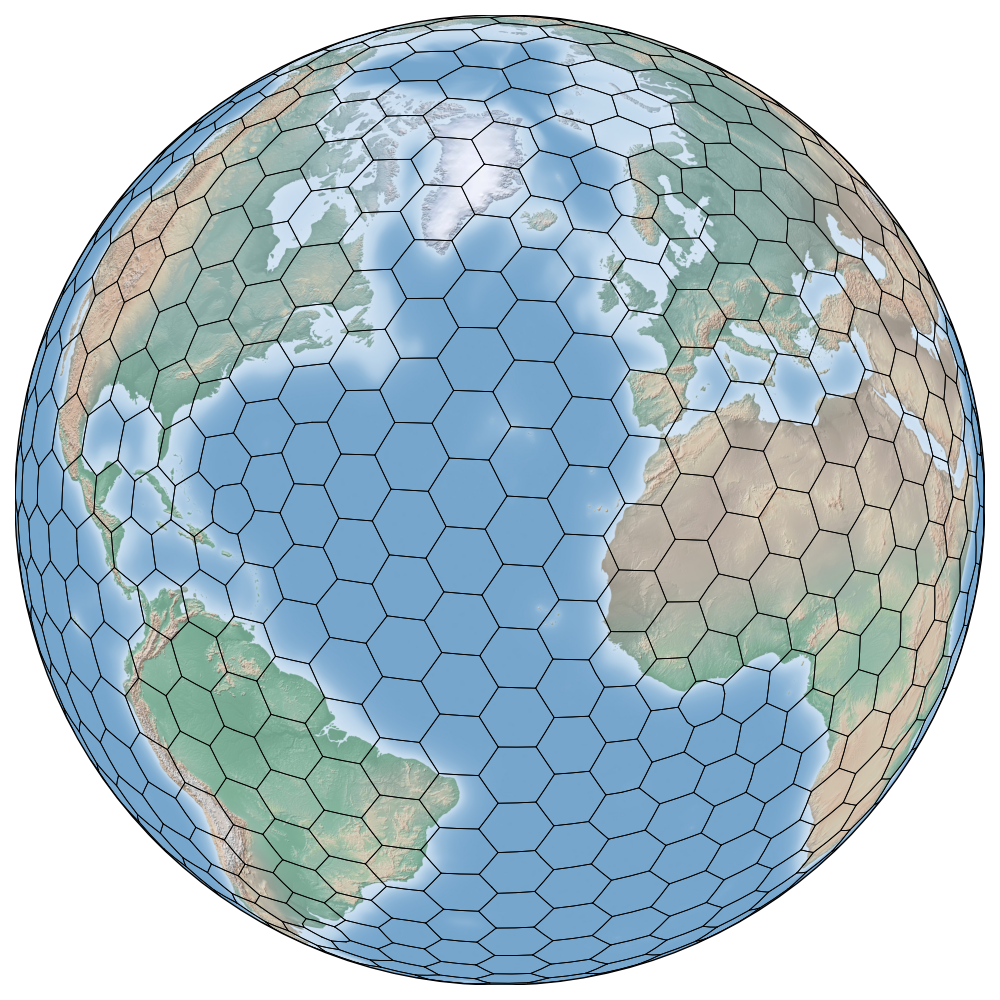
9 or 10 common at Uber (around the size of a city block)Resolution 0
Resolution 1
Resolution 2
Resolution 3
Resolution 4
Resolution 5
Resolution 6
Resolution 7
Resolution 8
Resolution 9
Resolution 10
Resolution 11
Resolution 12
Resolution 13
Resolution 14
Resolution 15
can do a lot with data in H3 (upcoming talks)… but first, you need to get it there, e.g.,
four operations for getting data in and out of H3:
┌───────────┬────────────┐
│ lat │ lng │
│ double │ double │
├───────────┼────────────┤
│ 40.76775 │ -73.956778 │
│ 40.763932 │ -73.996118 │
│ 40.78379 │ -73.979673 │
│ 40.763997 │ -73.977922 │
│ 40.734682 │ -73.990924 │
│ 0.0 │ 0.0 │
│ 40.754917 │ -73.993747 │
│ 40.751307 │ -73.97103 │
│ 40.725633 │ -73.990037 │
│ 40.74378 │ -73.979623 │
│ 40.75728 │ -74.000917 │
│ 40.728072 │ -73.991175 │
├───────────┴────────────┤
│ 12 rows 2 columns │
└────────────────────────┘latlng_to_cell and count trips in each cell┌─────────────────┬────────┐
│ hexid │ num │
│ varchar │ int64 │
├─────────────────┼────────┤
│ 89754e64993ffff │ 268965 │
│ 892a100d2c3ffff │ 210250 │
│ 892a100d2cbffff │ 149399 │
│ 892a100d64fffff │ 136503 │
│ 892a100d667ffff │ 136240 │
│ 892a100d613ffff │ 131916 │
│ 892a100d657ffff │ 124150 │
│ 892a100d63bffff │ 118233 │
│ 892a100d62bffff │ 114582 │
│ 892a10725b7ffff │ 112919 │
│ 892a100d643ffff │ 111728 │
│ 892a10725a7ffff │ 109896 │
├─────────────────┴────────┤
│ 12 rows 2 columns │
└──────────────────────────┘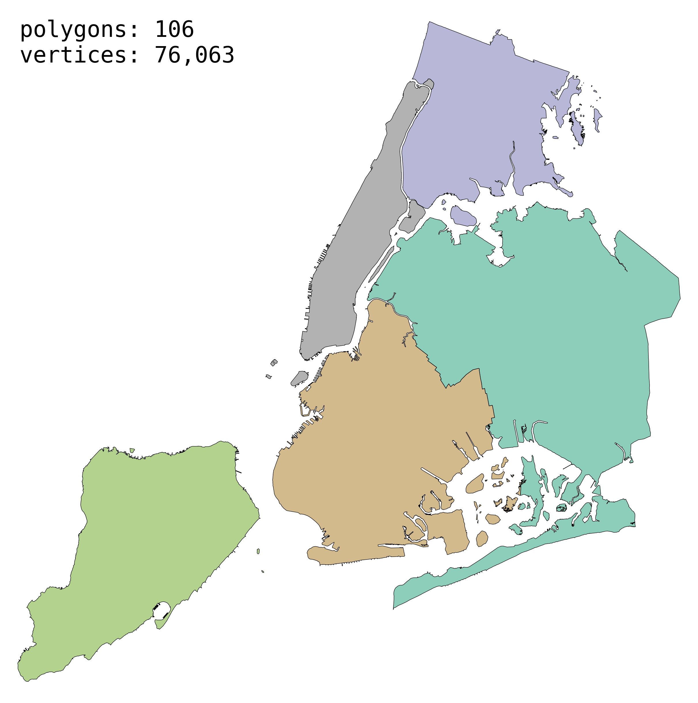
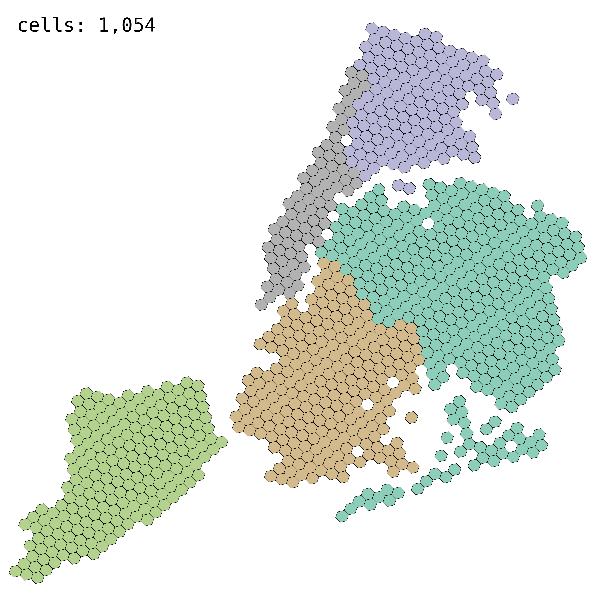
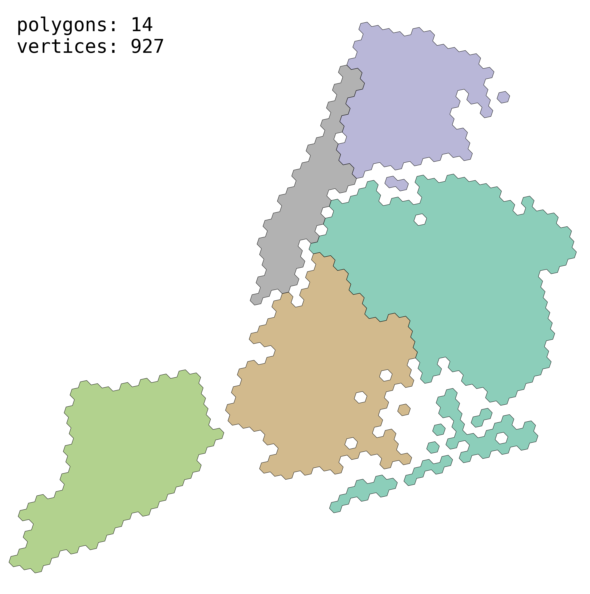
new algorithm (WIP) to convert H3 cells to spherical polygons
idea: try a discrete approach with new H3 Directed Edge indexes
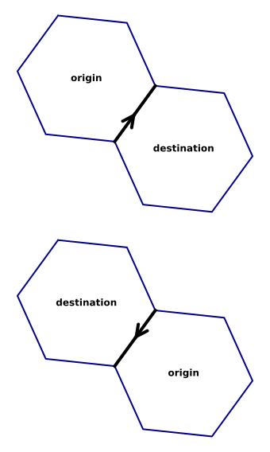
uint64 e.g., 1192a1072d6bfffftwo transforms underlie the algorithm:
single cell (base case): gives CCW loop of lat/lng points (i.e., a valid polygon)
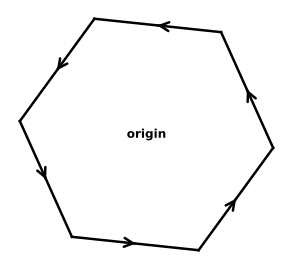
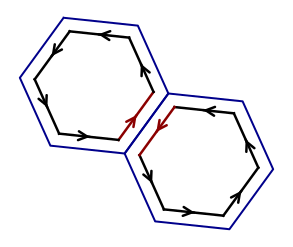
input: set of H3 cells
sketch: several details to fill in
(topology aside: computing the boundary of a cell complex)
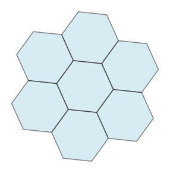
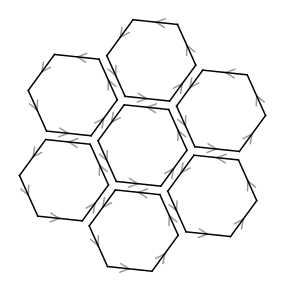
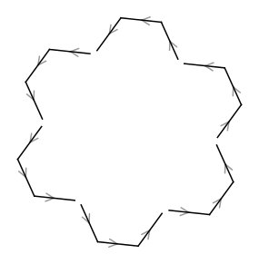
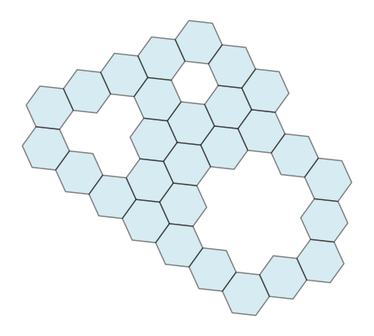
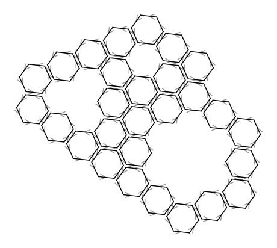
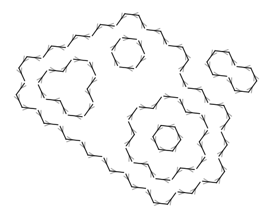
cells \(A\) and \(B\) start with separate ordered loops like
\[ \begin{aligned} A:\quad \to a^- &\to a \to a^+ \to \\ B:\quad \to b^- &\to b \to b^+ \to \end{aligned} \]
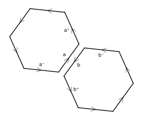
removing \(a\) and \(b\) connects their neighbors, forming a single loop:
\[ \begin{aligned} \overline{AB}:\quad \to a^- \to b^+ \to \cdots \to b^- \to a^+ \to \end{aligned} \]
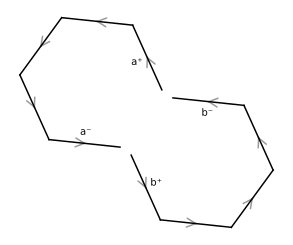
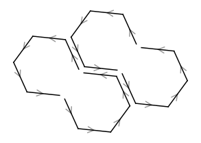
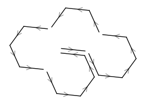
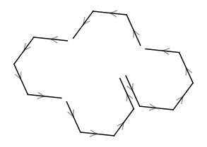
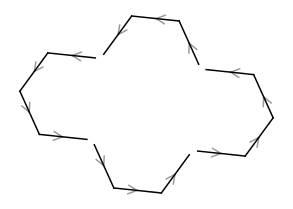
(also a valid intermediate state)
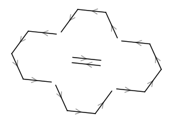
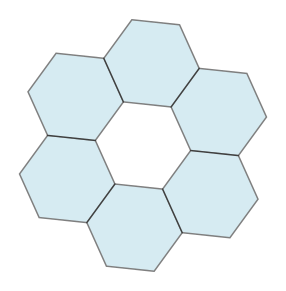
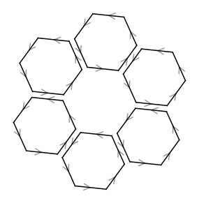
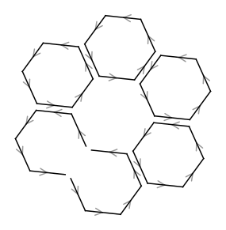
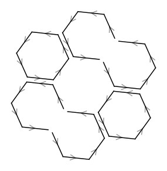
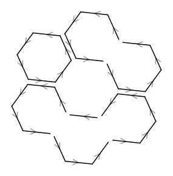
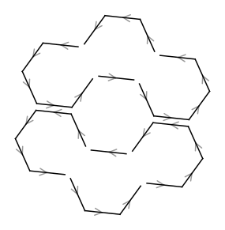
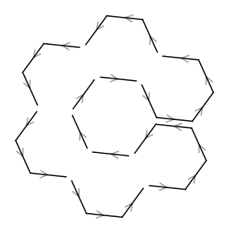
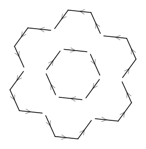
a, b) like:input: set of H3 cells
still not done! what are we missing?
at this point:
remaining questions:
idea: track connected components as we merge cells
after cancellations:
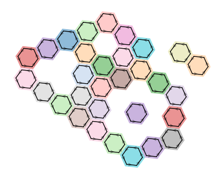
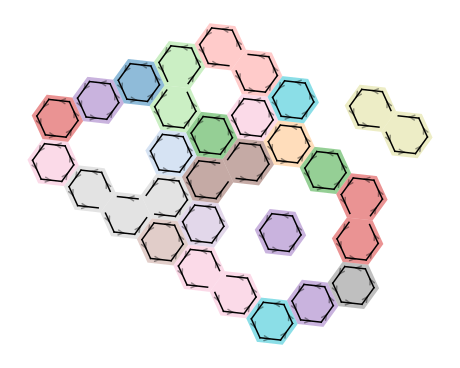
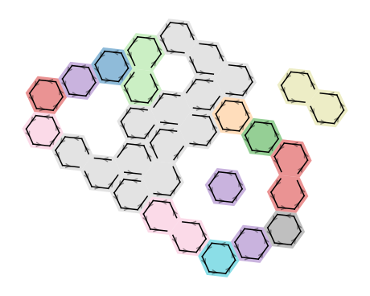
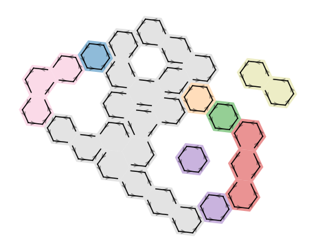
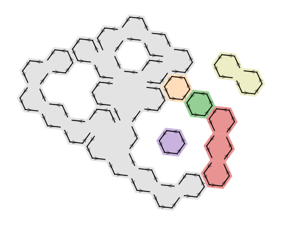
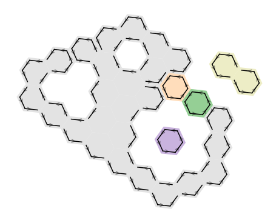
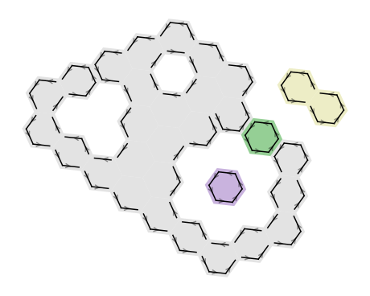
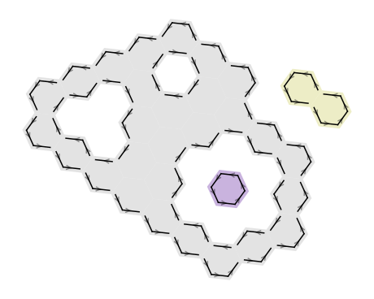
input: set of H3 cells
so far: purely discrete; graph theory (no floating point)
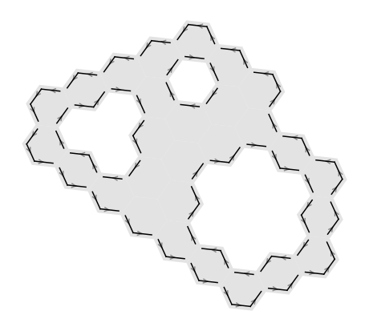
Which of these loops is the outer one? Which are the holes?
consider 4 loops in this polygon
for each polygon (connected component):
first use of continuous (non-discrete) math
input: set of H3 cells
new algorithm can output global polygons:
due to:
Colorado cells-to-polygon timings (code)
…but what about that 200x speedup?
| time | vs old | |||
|---|---|---|---|---|
| res | cells | old | new | new |
| 3 | 20 | 27 µs | 15 µs | 1.8x |
| 4 | 140 | 159 µs | 55 µs | 2.9x |
| 5 | 974 | 1.2 ms | 309 µs | 3.8x |
| 6 | 6,831 | 8.2 ms | 2.0 ms | 4.1x |
| 7 | 47,823 | 55.1 ms | 22.0 ms | 2.5x |
| 8 | 334,719 | 409.2 ms | 270.5 ms | 1.5x |
| 9 | 2,343,047 | 14.05 s | 2.00 s | 7.0x |
discrete directed edges approach laid groundwork for one more optimization:
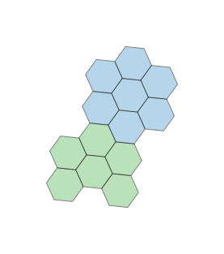
naive cell geometry is misleading: gaps and overlaps at the boundary!
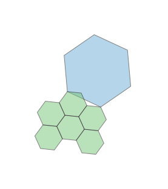
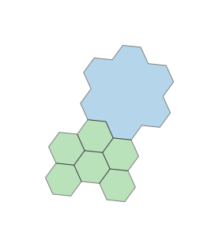
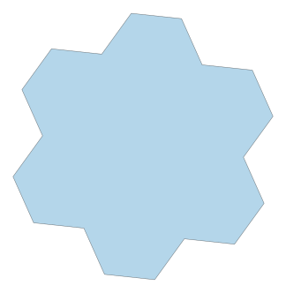
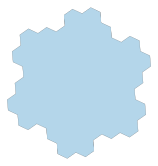
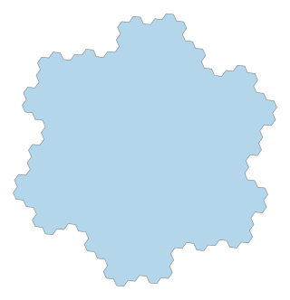
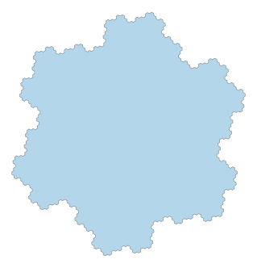
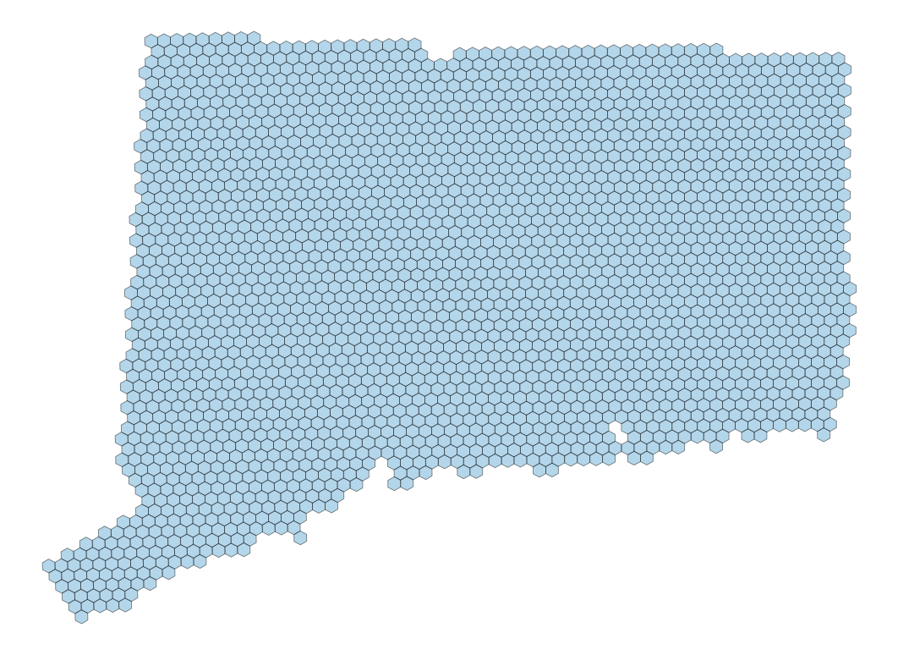
gets exponentially better with finer resolutions
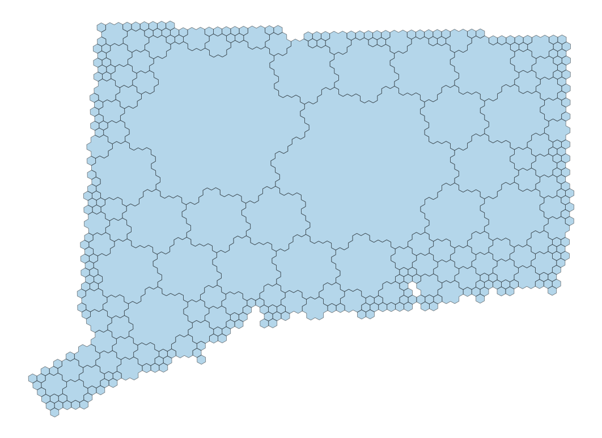
Colorado cells-to-polygon timings (code)
compactCells time (additional 2x faster without!)| time | speedup vs old | |||
|---|---|---|---|---|
| res | cells | old | new | gosper |
| 3 | 20 | 27 µs | 1.8x | 1.9x |
| 4 | 140 | 159 µs | 2.9x | 3.4x |
| 5 | 974 | 1.2 ms | 3.8x | 7.0x |
| 6 | 6,831 | 8.2 ms | 4.1x | 13.3x |
| 7 | 47,823 | 55.1 ms | 2.5x | 22.2x |
| 8 | 334,719 | 409.2 ms | 1.5x | 40.4x |
| 9 | 2,343,047 | 14.05 s | 7.0x | 198.3x |
cellsToMultiPolygon shows the payoff: